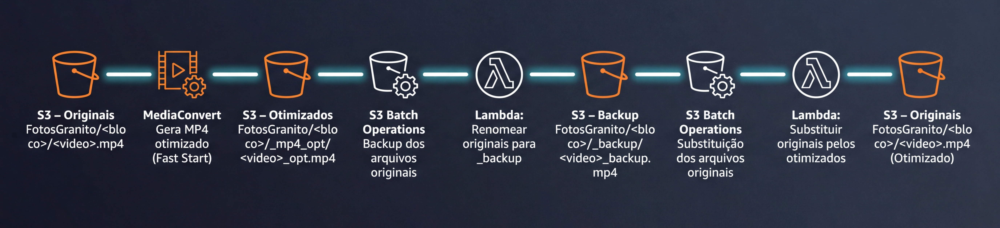
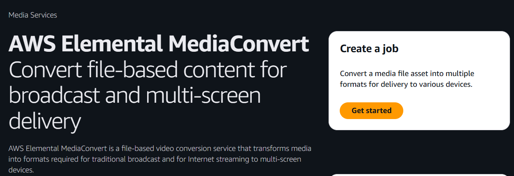
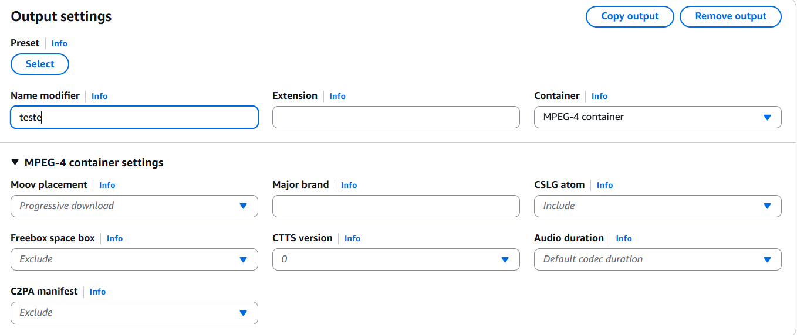
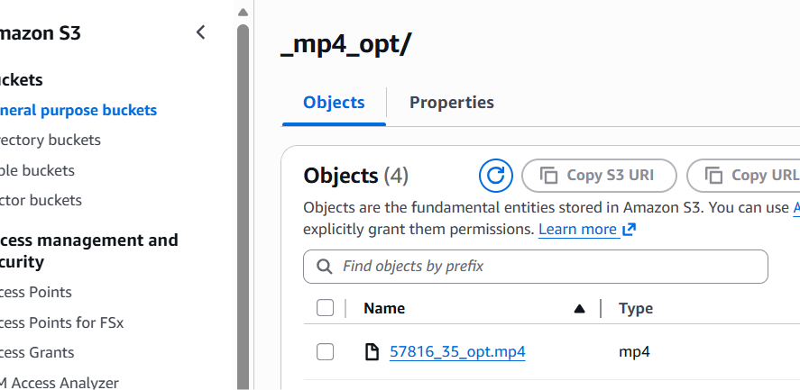
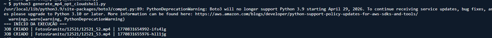
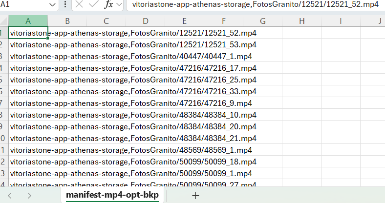
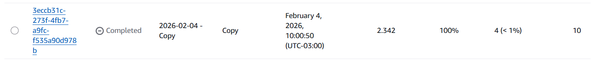
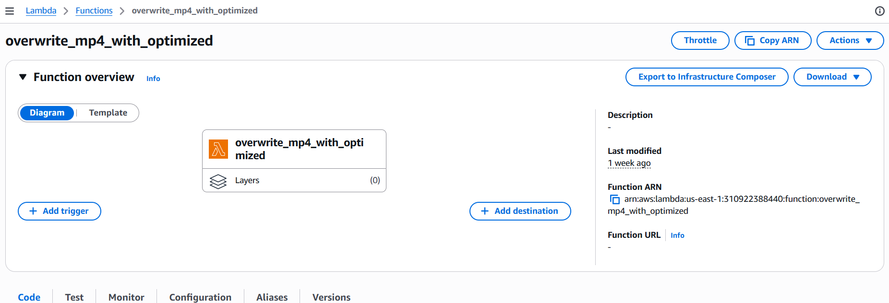

Otimização da entrega global de vídeos na AWS (sem alterar URLs): CloudFront + S3 + MediaConvert + Batch + Lambda
Um caso real de produção: vídeos MP4 com início lento em redes móveis, integrações consumindo URLs fixas (Salesforce) e a necessidade de acelerar o “play” sem quebrar nada.
Este post mostra, com foco em execução e segurança, como eu implementei uma esteira para otimizar milhares de MP4 armazenados no Amazon S3 e entregues via Amazon CloudFront, garantindo um ponto inegociável: as URLs não poderiam mudar — porque já estavam integradas (no meu caso, em páginas e fluxos do Salesforce).
O “sintoma” era simples de explicar e difícil de aceitar no dia a dia: em algumas redes 4G/5G, o vídeo demorava mais para começar. Em ambientes comerciais, isso vira atrito imediato: o usuário clica, espera, e a percepção de qualidade cai — mesmo com o vídeo estando “ok” tecnicamente.
O que você vai conseguir ao final#
- Início mais rápido do vídeo (melhora perceptível em mobile).
- Mesmas URLs (não quebra Salesforce, site, apps ou links já distribuídos).
- Processo escalável para milhares de arquivos.
- Plano de segurança: backup + possibilidade de rollback.
Resumo direto (TL;DR)#
- Problema: MP4s legados iniciando lentamente (especialmente em redes móveis).
- Restrição: as URLs já consumidas pelo Salesforce não podiam ser alteradas.
- Ideia central: gerar um MP4 otimizado para “start rápido” e substituir o arquivo no mesmo caminho/nome.
- Como: MediaConvert para gerar MP4 com “fast start” + S3 Batch Operations + Lambda para sobrescrever em lote.
- Segurança: backup em lote antes, e rollback possível.
Arquitetura (visão geral)#
A solução tem duas etapas grandes: (1) gerar versões otimizadas e (2) substituir os originais mantendo o mesmo nome. Em alto nível, o fluxo fica assim:

Código bash
S3 (images/<bloco>/<video>.mp4)
├─ MediaConvert → gera MP4 otimizado (fast start) em:
│ images/<bloco>/_mp4_opt/<video>_opt.mp4
├─ S3 Batch Operations (Copy) → faz backup dos originais
└─ S3 Batch Operations (Invoke Lambda) → Lambda copia _mp4_opt para a raiz e mantém o nome (.mp4)Pré-requisitos (checklist rápido)#
- Bucket S3 com os MP4s (ex.:
meubucketfake). - CloudFront distribuindo o prefixo onde os MP4s são acessados (ex.:
/images/*). - Acesso para usar: MediaConvert, S3 Batch Operations, Lambda e IAM.
- Região utilizada: us-east-1 (N. Virginia).
Entendendo o “porquê” (sem complicar)#
Muitos MP4 “antigos” ou gerados por pipelines diferentes começam a tocar mais lentamente porque o player precisa ler informações importantes do arquivo antes de dar play. A otimização “fast start” reorganiza o MP4 para que essas informações fiquem disponíveis logo no início, reduzindo o tempo até o primeiro frame — principalmente quando a rede varia (caso comum em 4G/5G).
O ponto importante: não é uma troca de tecnologia (não é sobre streaming HLS/DASH aqui). É uma melhoria pragmática: otimizar o mesmo MP4 para tocar melhor no mundo real.
Etapa 1 — Criar 1 job “modelo” no MediaConvert (para validar com confiança)#
Antes de qualquer automação em massa, o primeiro passo foi validar se a otimização realmente funcionava em um único vídeo.
Essa etapa existe por um motivo simples: evitar custo, retrabalho e surpresa ruim depois. Aqui eu usei o MediaConvert como uma ferramenta de validação técnica, não como ferramenta de execução em escala.

1.1 Criar um novo job#
- Acesse AWS Elemental MediaConvert na região us-east-1.
- Vá em Jobs → Create job.
- Se for a primeira vez usando o serviço, aceite a criação/configuração da role padrão sugerida pela AWS.
1.2 Definir o Input (vídeo original)#
O input do job é o vídeo original armazenado no Amazon S3. Como este é apenas um teste, basta escolher um MP4 representativo.
- No painel esquerdo, clique em Input 1.
- Em Input file URL, informe o caminho completo do arquivo no S3:
Código bash
s3://meubucketfake/images/57816/57816_41.mp4- Mantenha as demais opções no padrão para seguir as características do arquivo original.
1.3 Criar o Output Group (destino do vídeo otimizado)#
Um ponto importante de segurança: o vídeo otimizado não sobrescreve o original.
Nesta etapa, ele é gerado em uma pasta separada (_mp4_opt).
- Em Output groups, clique em Add.
- Selecione File group.
- Em Destination, informe o caminho da pasta de saída:
Código bash
s3://meubucketfake/images/57816/_mp4_opt/1.4 Configurar o Output (MP4 com início rápido)#
Aqui está o ponto-chave da otimização: configurar o MP4 para iniciar mais rápido, especialmente em redes móveis.
- Em Outputs, clique em Add output.
- Em Name modifier, utilize
_optpara identificar a versão otimizada. - Container: MP4.
-
Moov placement:
selecione Progressive download.
Esse ajuste move os metadados para o início do arquivo, reduzindo o tempo até o primeiro frame. - Vídeo: H.264 (compatibilidade ampla). Para controle de qualidade e tamanho, QVBR costuma ser um bom ponto de partida.

Em JSON, esse ponto aparece assim:
Código json
"Mp4Settings": {
"MoovPlacement": "PROGRESSIVE_DOWNLOAD"
}1.5 Executar o job e validar o resultado#
- Clique em Create / Submit job.
- Aguarde o job finalizar.
- Verifique no S3 se o arquivo foi gerado corretamente:
Código bash
images/57816/_mp4_opt/57816_41_opt.mp4- Compare tamanho, qualidade visual e tempo de início.
- Se possível, teste a reprodução via CloudFront em uma rede 4G/5G.

Com esse job validado, o padrão técnico está definido. A partir daqui, ele pode ser reutilizado com segurança na automação em lote (Etapa 2).
Etapa 2 — Automatizar a criação de jobs do MediaConvert (em lote, do jeito certo)#
Depois de validar manualmente um job no MediaConvert (Etapa 1), o próximo desafio era escalar. Fazer isso vídeo por vídeo seria inviável. A solução foi automatizar a criação dos jobs usando Python no CloudShell, percorrendo o bucket S3 e disparando jobs apenas para os arquivos necessários.
Aqui é importante deixar algo bem claro, porque é um erro comum (e eu mesmo caí nisso no início):
.py e executado explicitamente com python3.
2.1 Fluxo correto no CloudShell#
- Abrir o CloudShell na região us-east-1.
- Criar um arquivo Python usando
nano. - Colar o script completo dentro do arquivo.
- Salvar o arquivo.
- Executar usando
python3.
Código bash
nano generate_mp4_opt_cloudshell.py
# cola o script
# CTRL + O → Enter
# CTRL + X
python3 generate_mp4_opt_cloudshell.py
2.2 Endpoint do MediaConvert#
O MediaConvert utiliza um endpoint específico por conta e região. Antes de criar os jobs via API, validei o endpoint correto para us-east-1:
Código bash
https://mediaconvert.us-east-1.amazonaws.com2.3 Script usado para criar os jobs em lote#
O script abaixo percorre o prefixo images/, identifica arquivos .mp4 e:
- Pula arquivos que já possuem versão otimizada em
/_mp4_opt/ - Cria jobs no MediaConvert apenas quando necessário
- Gera logs claros para acompanhamento e prints
Script completo python
import boto3
import os
import time
# =========================
# CONFIGURAÇÕES
# =========================
REGION = "us-east-1"
ACCOUNT_ID = "*AQUI VOCE COLOCA SEU ACC ID*"
BUCKET = "meubucketfake"
BASE_PREFIX = "images/"
OUTPUT_FOLDER = "_mp4_opt"
DELAY_SECONDS = 0.6 # seguro contra throttling
MEDIACONVERT_ENDPOINT = "https://mediaconvert.us-east-1.amazonaws.com"
ROLE_ARN = f"arn:aws:iam::{ACCOUNT_ID}:role/service-role/MediaConvert_Default_Role"
# =========================
# CLIENTS
# =========================
s3 = boto3.client("s3", region_name=REGION)
mediaconvert = boto3.client(
"mediaconvert",
region_name=REGION,
endpoint_url=MEDIACONVERT_ENDPOINT
)
# =========================
# HELPERS
# =========================
def mp4_opt_exists(base_dir):
"""Verifica se já existe pasta _mp4_opt"""
resp = s3.list_objects_v2(
Bucket=BUCKET,
Prefix=f"{base_dir}/{OUTPUT_FOLDER}/",
MaxKeys=1
)
return "Contents" in resp
def create_job(input_key):
base_dir = os.path.dirname(input_key).replace("\\", "/")
input_s3 = f"s3://{BUCKET}/{input_key}"
output_s3 = f"s3://{BUCKET}/{base_dir}/{OUTPUT_FOLDER}/"
job = {
"Role": ROLE_ARN,
"Settings": {
"Inputs": [
{
"FileInput": input_s3,
"VideoSelector": {}
}
],
"OutputGroups": [
{
"Name": "MP4_OPT",
"OutputGroupSettings": {
"Type": "FILE_GROUP_SETTINGS",
"FileGroupSettings": {
"Destination": output_s3
}
},
"Outputs": [
{
"NameModifier": "_opt",
"ContainerSettings": {
"Container": "MP4",
"Mp4Settings": {
"MoovPlacement": "PROGRESSIVE_DOWNLOAD"
}
},
"VideoDescription": {
"CodecSettings": {
"Codec": "H_264",
"H264Settings": {
"RateControlMode": "QVBR",
"QvbrSettings": {
"QvbrQualityLevel": 8
},
"MaxBitrate": 15000000,
"QualityTuningLevel": "SINGLE_PASS_HQ",
"CodecProfile": "HIGH",
"CodecLevel": "AUTO",
"FramerateControl": "INITIALIZE_FROM_SOURCE"
}
}
}
}
]
}
]
}
}
response = mediaconvert.create_job(**job)
job_id = response["Job"]["Id"]
print(f"JOB CRIADO | {input_key} | {job_id}")
# =========================
# MAIN
# =========================
def main():
paginator = s3.get_paginator("list_objects_v2")
criados = 0
pulados = 0
print("=== INÍCIO DA EXECUÇÃO ===")
for page in paginator.paginate(Bucket=BUCKET, Prefix=BASE_PREFIX):
for obj in page.get("Contents", []):
key = obj["Key"]
# filtros
if not key.lower().endswith(".mp4"):
continue
if f"/{OUTPUT_FOLDER}/" in key:
continue
if key.lower().endswith("_opt.mp4"):
continue
base_dir = os.path.dirname(key)
# pular se já existe
if mp4_opt_exists(base_dir):
print(f"PULADO (já existe): {key}")
pulados += 1
continue
create_job(key)
criados += 1
time.sleep(DELAY_SECONDS)
print("=== FIM DA EXECUÇÃO ===")
print(f"JOBS CRIADOS: {criados}")
print(f"JOBS PULADOS: {pulados}")
if __name__ == "__main__":
main()
2.4 Observação importante sobre estabilidade#
O CloudShell pode desconectar por inatividade. Se o volume for muito grande, o ideal é:
- Usar
nohup, ou - Executar o script a partir de uma instância Linux
Mesmo assim, o script foi escrito de forma idempotente: se for interrompido e executado novamente, ele não recria jobs duplicados.
Resumo da etapa
O MediaConvert foi utilizado para criar e validar o job modelo.
O script foi responsável por executar esse job em escala.
Essa separação de responsabilidades torna o processo: mais seguro, escalável e fácil de manter.
Etapa 3 — Backup total dos MP4 originais (antes de qualquer substituição)#
Antes de sobrescrever qualquer arquivo, eu fiz backup via S3 Batch Operations (Copy). Como o bucket não tinha versionamento habilitado, esse backup foi o meu “cinto de segurança”.
3.1 Definir o destino do backup#
A ideia é manter a estrutura inteira de images/ dentro de um bucket/prefixo de backup:
Código bash
s3://images_BACKUP/images/3.2 Criar o Batch job (Copy) com calma e rastreabilidade#
- Acesse S3 → Batch Operations → Create job.
- Em Manifest, use uma lista apenas dos MP4 originais (isso deixa o job previsível).
- Em Operation, escolha Copy.
- Em Destination, configure
s3://images_BACKUP/images/. - Revise permissões da role do Batch (ela precisa ler do bucket origem e gravar no destino).
- Execute e acompanhe a taxa de sucesso.


Etapa 4 — Substituir os originais mantendo o mesmo nome (Batch + Lambda)#
Aqui está o objetivo final, de forma bem direta: o Salesforce continua acessando
images/<bloco>/<video>.mp4 e, “por baixo”, esse arquivo passa a ser o otimizado.
4.1 Lambda: a lógica de sobrescrita (conceito)#
A Lambda recebe o evento do Batch (no campo tasks), lê a key do arquivo otimizado e calcula o destino removendo:
(a) a pasta /_mp4_opt/ e (b) o sufixo _opt do nome.
Código bash
images/57816/_mp4_opt/57816_41_opt.mp4
→ images/57816/57816_41.mp4Esse passo é crítico porque é onde você garante a promessa do projeto: mesma URL, arquivo melhor.

Código python
import boto3
import urllib.parse
s3 = boto3.client("s3")
def lambda_handler(event, context):
results = []
for task in event["tasks"]:
try:
task_id = task["taskId"]
bucket_arn = task["s3BucketArn"]
bucket = bucket_arn.split(":::")[1]
source_key = urllib.parse.unquote_plus(task["s3Key"])
# Segurança: só processa _mp4_opt
if "/_mp4_opt/" not in source_key:
raise Exception("Arquivo fora da pasta _mp4_opt")
# Calcula destino final
dest_key = source_key.replace("/_mp4_opt/", "/")
dest_key = dest_key.replace("_opt.mp4", ".mp4")
# Copia sobrescrevendo
s3.copy_object(
Bucket=bucket,
CopySource={
"Bucket": bucket,
"Key": source_key
},
Key=dest_key
)
results.append({
"taskId": task_id,
"resultCode": "Succeeded",
"resultString": f"Substituído por {dest_key}"
})
except Exception as e:
results.append({
"taskId": task.get("taskId", "unknown"),
"resultCode": "PermanentFailure",
"resultString": str(e)
})
return {
"invocationSchemaVersion": "1.0",
"invocationId": event["invocationId"],
"treatMissingKeysAs": "PermanentFailure",
"results": results
}
4.2 Batch job: invocando a Lambda em massa#
- S3 → Batch Operations → Create job
- Manifest: lista apenas dos arquivos
_mp4_opt/*_opt.mp4 - Operation: Invoke AWS Lambda function
- Function:
overwrite_mp4_with_optimized - Execute primeiro com um lote pequeno (por exemplo, 10 arquivos) para validar o comportamento.
4.3 Permissões e erros comuns (o que costuma travar)#
- AccessDenied lambda:InvokeFunction → a role do Batch precisa permissão para invocar a função.
- Evento inesperado → no Batch, o evento costuma vir em
tasks, não emRecords. - Manifest errado → se você mandar arquivos que não são os otimizados, a Lambda pode calcular destinos incorretos.
Etapa 5 — CloudFront: cache sob controle (para não “parecer” que não mudou)#
Mesmo substituindo o arquivo no S3, o CloudFront pode continuar servindo uma versão em cache por algum tempo. Portanto, é importante revisar as regras de cache do path onde os MP4s são entregues.
5.1 Cache Behavior (recomendação prática)#
- Separe paths de mídia vs site quando fizer sentido (fica mais fácil ajustar TTL sem afetar o site todo).
- Para mídia, normalmente você só precisa de GET/HEAD.
- TTL: se você substitui conteúdo mantendo o mesmo nome, considere TTL menor nesse path — ou planeje uma invalidação durante a virada.
5.2 Origin Shield#
Eu ativei Origin Shield (us-east-1) para reduzir cache misses e aliviar o S3 em cenários de muitas requisições repetidas.
Checklist de testes (o que validar antes de considerar “pronto”)#
- Abra a URL antiga do MP4 (a usada pelo Salesforce) e confirme que toca normalmente.
- Teste em Wi‑Fi e em 4G/5G (se possível, em mais de uma operadora).
- Confirme que o arquivo final mantém o nome
.mp4(sem quebrar integrações e embeds). - Verifique headers de cache do CloudFront (HIT/MISS) para entender se você está vendo versão antiga ou nova.
- Confira CloudWatch Logs da Lambda para garantir que não houve falhas em massa.
Rollback (como voltar rápido se algo sair do esperado)#
Se você fez o backup, voltar é simples: crie um novo Batch (Copy) invertendo a direção: backup → original. Isso te dá confiança para executar a mudança em produção sem “apostas”.
Conclusão#
O resultado prático foi o que importava: vídeos iniciando mais rápido (principalmente em mobile), sem alterar URLs, sem exigir mudanças no Salesforce e com um processo que escala para milhares de arquivos com segurança.
Após isso o passo natural é automatizar para que novos vídeos sejam otimizados automaticamente.